Zodiac Landscape Art Prints — The Oil-Painted Series
The zodiac landscape collection from Built By Josh Studio renders each of the 12 Western zodiac signs as a place instead of a figure. No rams, no lions, no scorpions — just the mythic environment each sign would inhabit, painted with oil-textured brushwork and cinematic depth. The result is 12 standalone wall pieces that work as a cohesive atmospheric set or as one-off statement prints.
Every landscape is delivered as a high-resolution digital download (up to 6000×9000 pixels). Files print cleanly at standard frame sizes and extend to panoramic crops when you want the full horizontal weight. All files are available on the Built By Josh Studio Etsy shop.
Why Landscape Zodiac Art Instead of Portraits
Traditional zodiac art gives you the figure: the ram, the bull, the twins. Landscape zodiac art gives you the world. The environment that figure would live in. The weather of their emotional geography. The place you would visit if you stepped inside their sign.
Landscapes work differently on a wall. A portrait draws the eye to a character; a landscape draws the eye into a space. For rooms that need depth, atmosphere, or cinematic scale, a landscape print earns its place where a portrait can feel too direct. The two series also pair well — a figure portrait of your sign alongside the landscape it inhabits.
The 12 Zodiac Landscapes
The Forge of Aries
A volcanic forge world where rivers of molten metal cut through obsidian ridges. Every surface glows with the heat of creation — the elemental home of the sign that begins the zodiac.
Get The Forge of Aries on Etsy ↗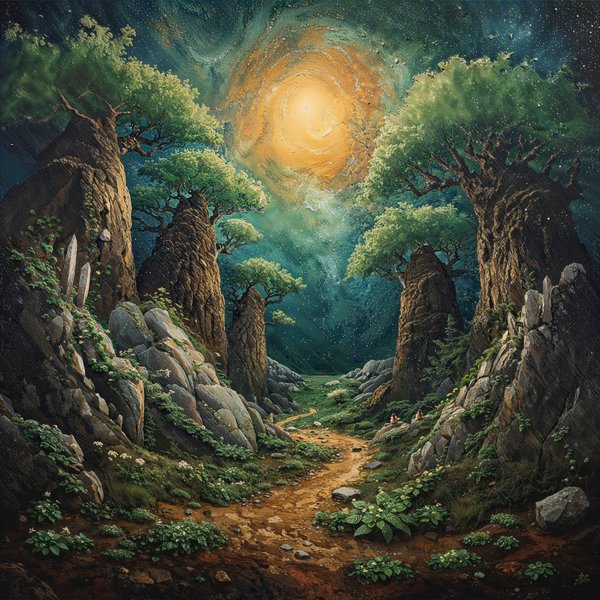
The Verdant Grove
A sunlit sanctuary deep in ancient woods. Moss-covered stone, golden hour light through the canopy, and the quiet weight of a place that has stood for centuries. Taurus in landscape form.
Get The Verdant Grove on Etsy ↗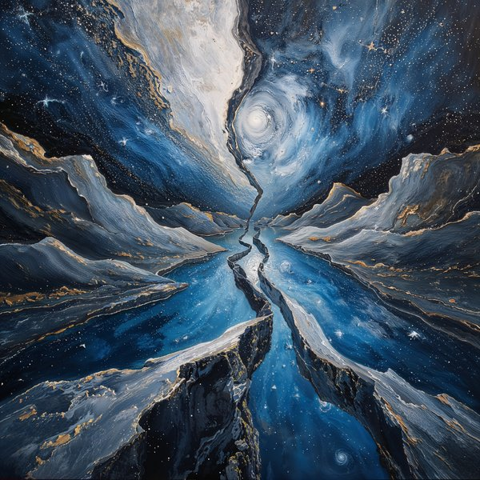
The Rift of Gemini
Two worlds split by a luminous rift — one side day, one side night, both real. A landscape designed around duality, reflection, and the Gemini refusal to choose a single truth.
Get The Rift of Gemini on Etsy ↗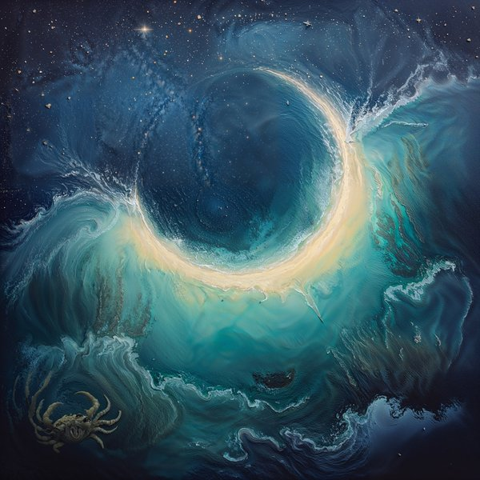
The Moonlit Lagoon
A silvered lagoon at full moon — still water, soft bioluminescence, and the hush of tides that only move when no one is watching. Cancer as emotional geography.
Get The Moonlit Lagoon on Etsy ↗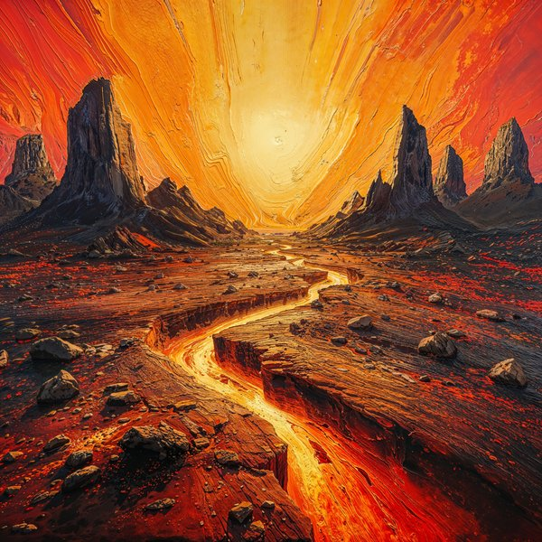
The Sunfire Expanse
A vast golden plain under a sun that never quite sets. Heat rises off the land, light catches every surface, and the whole horizon glows with Leo-scale presence. A landscape that performs.
Get The Sunfire Expanse on Etsy ↗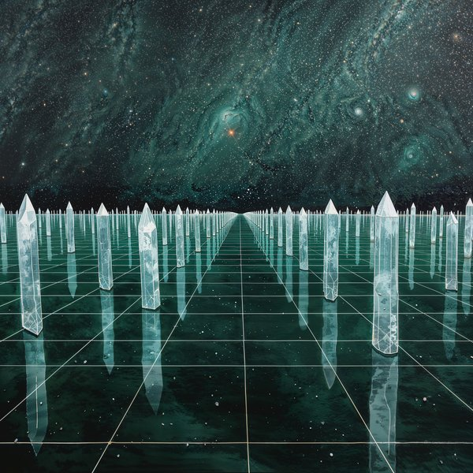
The Crystal Archive
A luminous library carved from crystal — every surface precise, every angle intentional. The Virgo landscape is a place that has been thought through. Order given a cathedral.
Get The Crystal Archive on Etsy ↗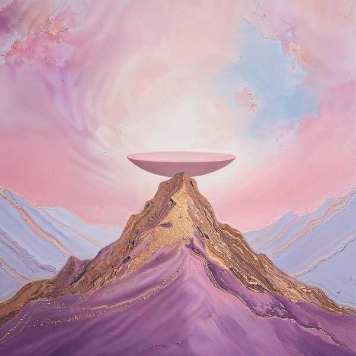
The Celestial Balance
A moonlit hall where enormous scales hang from the sky itself, never quite tilting. The Libra landscape holds all decisions in suspension — refined, symmetrical, eternally in balance.
Get The Celestial Balance on Etsy ↗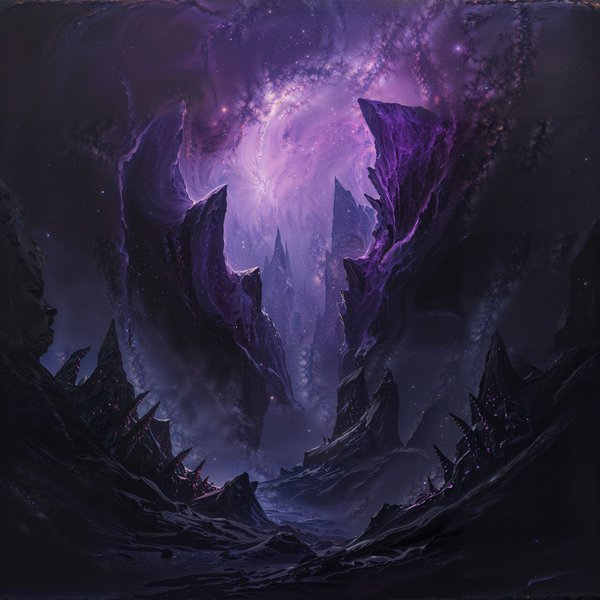
The Abyss of Scorpio
A deep-ocean void lit only by what stirs beneath it. Crimson pressure-glow, impossible depth, and the certainty that something patient is watching. Scorpio as place, not figure.
Get The Abyss of Scorpio on Etsy ↗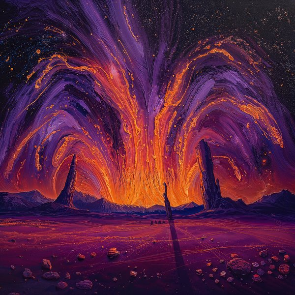
The Archer's Expanse
A horizon with no edge. The Sagittarius landscape is pure scope — open plains, open sky, the kind of view that exists to be aimed toward. A room-sized piece of cosmic wanderlust.
Get The Archer's Expanse on Etsy ↗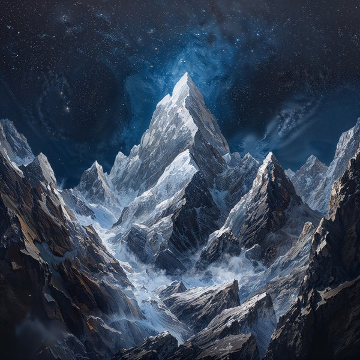
The Obsidian Peaks
Sheer black summits above the cloud line. Austere, ancient, and architecturally still. The Capricorn landscape is the altitude itself — a place that only exists if you're willing to climb.
Get The Obsidian Peaks on Etsy ↗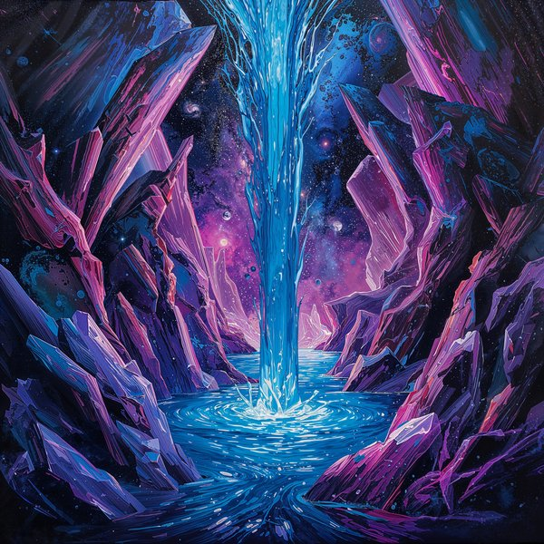
The Starfall Cascade
A waterfall made of falling stars. Electric, impossible, forward-leaning — an Aquarius landscape that treats physics as a suggestion and beauty as a given.
Get The Starfall Cascade on Etsy ↗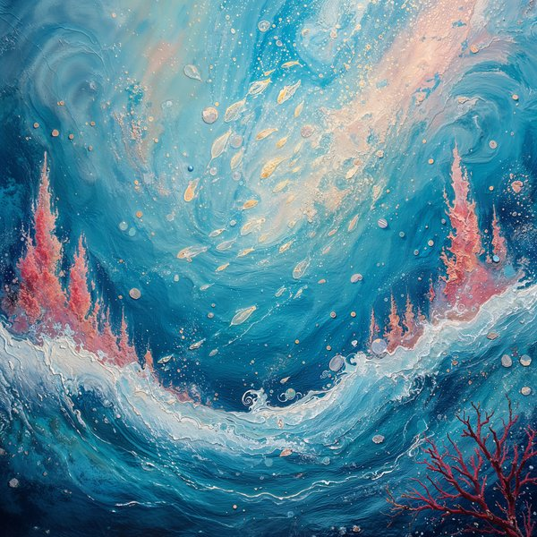
The Dreaming Tides
A luminous oceanic dreamscape where the line between water and sky has softened into the same color. The Pisces landscape is pure reverie — the place you end up when you stop trying to be anywhere.
Get The Dreaming Tides on Etsy ↗The Zodiac Realms — Cosmos-Landscape Hybrid Series
A second landscape series — hybrid cosmos/landscape pieces that sit between the grounded oil-painted environments above and pure space-scale cosmic art. Each realm is the zodiac sign rendered as an environment that is both a place and a weather system for the cosmos.
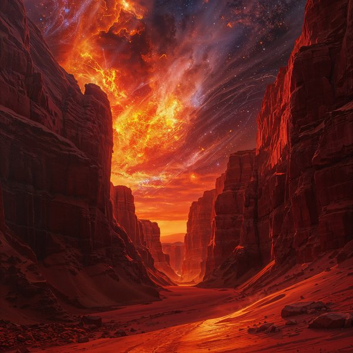
The Ignition Horizon
A horizon on fire — molten skies over glowing crimson geometry. The Aries realm where every dawn is a first strike.
Get The Ignition Horizon on Etsy ↗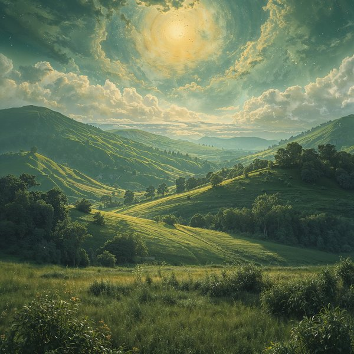
The Verdant Ridge
Lush botanical ridges pushing up into a starfield. Earth anchors, cosmos observes. The Taurus realm sits between the two.
Get The Verdant Ridge on Etsy ↗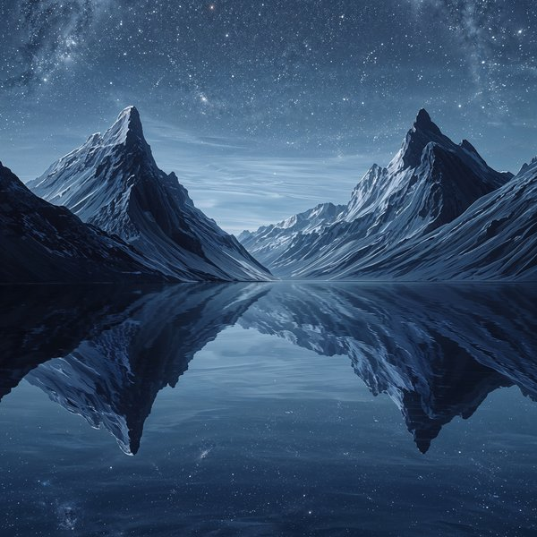
The Mirrored Divide
Two mirrored landscapes split by a luminous seam. Duality given scale. The Gemini realm that refuses to resolve.
Get The Mirrored Divide on Etsy ↗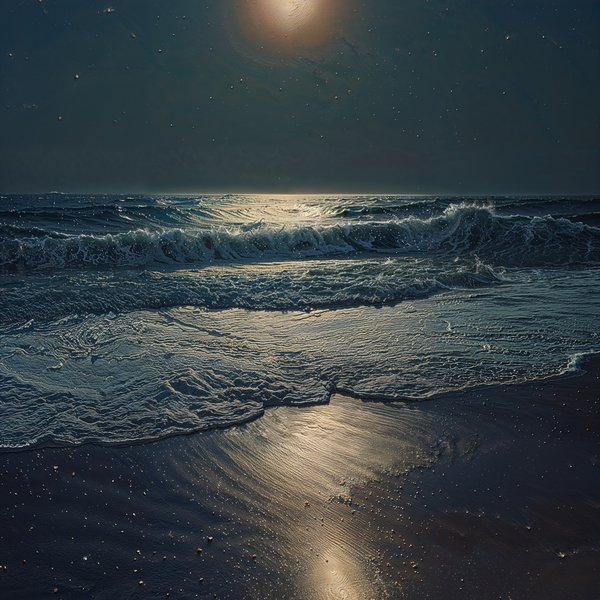
The Lunar Coastline
A silvered shoreline under a swollen moon. Tides drawn toward a sky that owns them. The Cancer realm at low, luminous tide.
Get The Lunar Coastline on Etsy ↗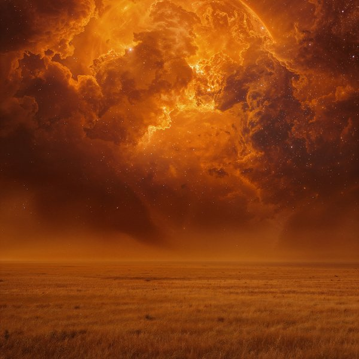
The Solar Expanse
A radiant plain beneath a sun that never falls. Gold as terrain, gold as sky. The Leo realm in perpetual high noon.
Get The Solar Expanse on Etsy ↗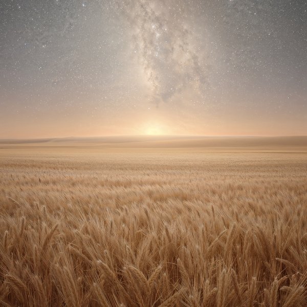
The Starlit Fields
Precise, cultivated fields under a constellation-dense sky. Order meets infinity. The Virgo realm as a quiet cosmic garden.
Get The Starlit Fields on Etsy ↗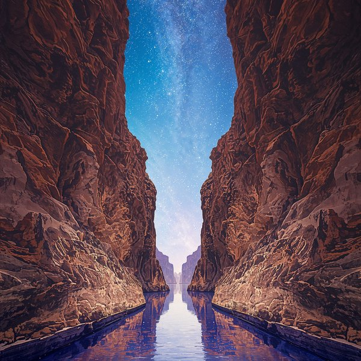
The Equilibrium Canyon
A vast balanced canyon with suspended celestial scales overhead. The Libra realm — weight and weightlessness at the same time.
Get The Equilibrium Canyon on Etsy ↗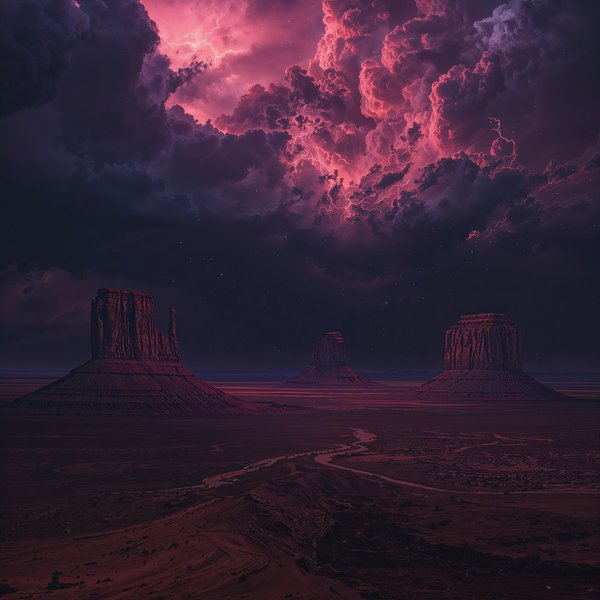
The Plasma Desert
A desert lit from beneath by electric crimson pulses. Heat without sun. The Scorpio realm where the ground itself holds the charge.
Get The Plasma Desert on Etsy ↗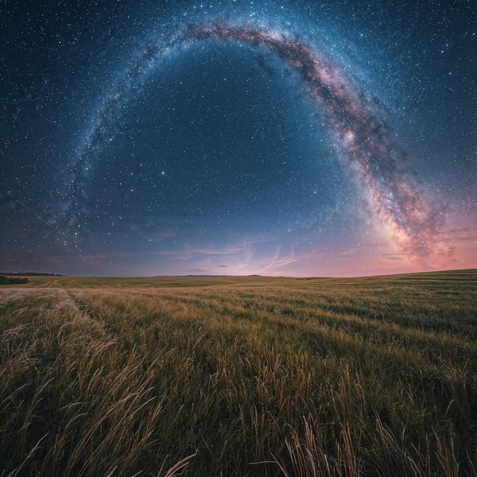
The Celestial Horizon
A cosmic horizon stretching forever outward. Every direction is a new arrow. The Sagittarius realm as pure open cosmic scope.
Get The Celestial Horizon on Etsy ↗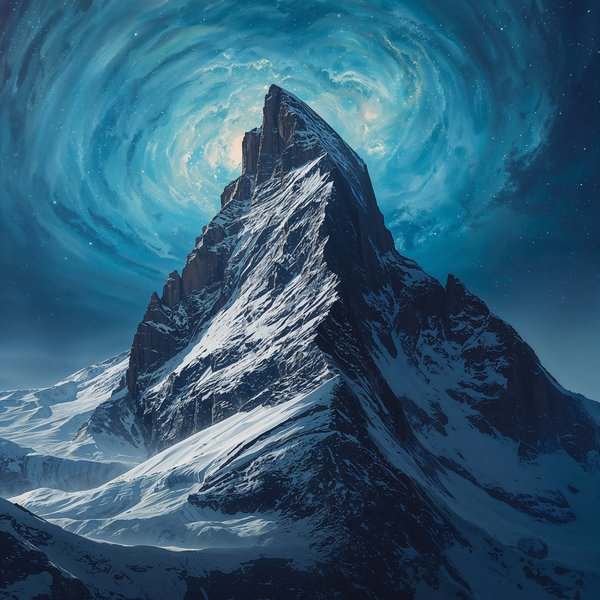
The Cosmic Summit
Obsidian peaks reaching into a galactic ceiling. Ascent made literal. The Capricorn realm where altitude meets star-field.
Get The Cosmic Summit on Etsy ↗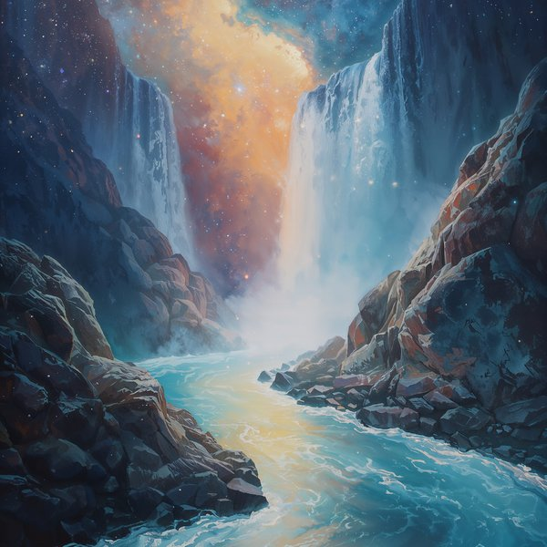
The River of Light
A river of liquid starlight winding through crystalline valleys. Current made of photons. The Aquarius realm in motion.
Get The River of Light on Etsy ↗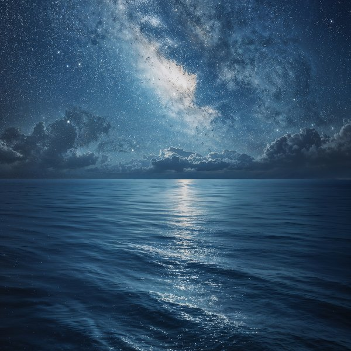
The Infinite Sea
An oceanic dreamscape that blurs into the stars. Water and cosmos share the same surface. The Pisces realm as boundary dissolved.
Get The Infinite Sea on Etsy ↗Who Buys Zodiac Landscape Art
This collection is for anyone who wants zodiac art with more atmosphere and less figure-drawing. Buyers usually fall into one of these camps:
- Collectors who already own a figure-based zodiac print and want the complementary landscape for the same sign
- Decorators who prefer atmospheric wall art over portraits — especially for living rooms, bedrooms, and larger spaces
- Anyone who finds zodiac symbolism meaningful but doesn't want a ram or lion on their wall
- Fans of oil-painted landscape art who happen to also care about astrology
- Gift shoppers looking for something more unusual than standard zodiac clip-art
- Couples or households matching multiple signs — landscapes pair well as sets where portraits would compete
What's Included With Every Zodiac Landscape Print
Each landscape listing is an instant digital download. After purchase on Etsy, you get immediate access to high-resolution files — no shipping, no waiting, no physical product mailed to you.
Files are sized up to 6000×9000 pixels and print cleanly at standard frame sizes (5×7, 8×10, 11×14, 16×20, 18×24, 24×36) plus wider panoramic crops when you want the full horizontal scope. Both JPG and PNG formats are included.
Visit the Etsy shop for the most up-to-date pricing, sales, and promotions.